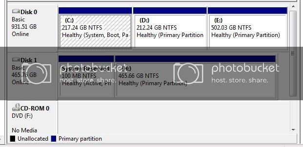

Drive B as default? Drive A and B is a remnant from the old times and was used for floppy drives. Windows treats those letters different than every letter after C.
I can’t figure why it would put your drives there, but can’t you just right click the drive and choose ‘Change drive letter’?
The 0,1 and 2 are the physical order in which the disks are connected to the SATA connectors on the board. So disk 0 would most likely be connected to SATA 0 on the board, unless I’m mistaken.
If I’m working on a machine with several HDD’s, I find writing down the model/serial number is useful especially if they are all the same brand so that in the BIOS you can be completely sure of the boot order and/or to which physical disk you are making changes to.
To be on the safe side I usually disconnect drives that are not initially involved in any installations or major changes and reconnect them later and ensuring the boot order in the bios is as you want it.
O
Having other operating systems on disks other than the boot disk shouldn’t make any difference other than the assignment of the drive letters which I usually leave as default.
To make matters easier you can change the disk label to say for example System, data1, data2 etc.
That was my thought as well. You should just be able to right click on one of the partitions labelled B: and change it to E: or F: or something. Haven’t the slightest idea why that happened, but it might be a good idea to change the name of the drive also as A scientist said, in case maybe you had both named “Data” or something and that confused it.
I’ve tried practically everything on the letter list. It changes both of them. I just said B because that’s where I was at :S
maybe someone set up RAID on your PC and didn’t tell you?
How are you doing, xalener?
Is the OS working correctly now?
Not trying to be a smart ass, but Win should assign drive letters depending on the presence of other devices such as DVD drives etc and they will always start as a letter AFTER C:.
Here is a pic of my setup for illustration purposes. Maybe you could do the same if the system is functioning as it should.

I don’t want to derail this thread but I just checked and mine are reversed, disk 0 is actually on sata port 3, and disk 2 is my SSD (C:) which is connected to Sata port 1… kinda weird… But at least drive H:\ is still bootable in 2 ways (either by choosing it in the BIOS or by disconnecting the SSD)
{kind=link}
I’d be interested to know which mobo is being used and also if it’s UEFI.
it’s an ASUS P5Q SE, but it’s not UEFI, just a BIOS. When I installed windows, all the other hard drives were disconnected.
Doesn’t matter really…